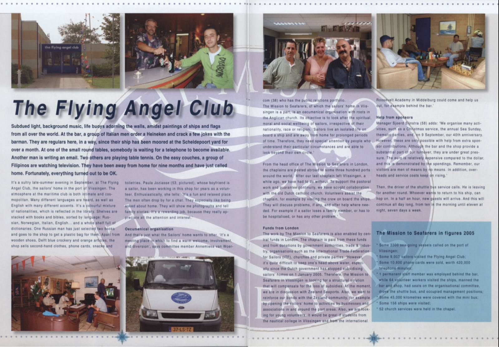

Gedempt licht, muziekje op de achtergrond, reddingsboeien aan de muur, schilderijen van schepen en vlaggetjes van alle landen van de wereld. Aan de bar bestelt een stel Italiaanse mannen een Heineken en maakt grapjes met de barman. Ze komen hier regelmatig, hun schip ligt al een maand op de Scheldepoortwerf. Aan één van de ronde tafeltjes wacht iemand tot er een telefoon vrij komt. Ietsje verderop zit een man te e-mailen. Twee anderen spelen een potje tafeltennis. In de luie banken zit een groepje Filippijnen voor de televisie. Ze zijn 9 maanden van huis en hebben zojuist naar hun familie gebeld. Gelukkig is alles oké.
Zomaar een warme woensdagavond in september in The Flying Angel Club, het zeemanshuis in de Vlissingse haven.

Smeltkroes van talen
De sfeer ademt die van knus maritiem clubhuis en tegelijkertijd van wereldse ontmoetingsplek. Je hoort allerlei talen en ook veel Engels met accenten. Het is er een smeltkroes van nationaliteiten. Dat zie je terug in de bibliotheek. Rekken vol leesboeken en bijbels, gesorteerd op Russisch, Noors, Italiaans, Engels… en een hele plank vol woordenboeken. Een Rus heeft zojuist twee boeken uitgezocht en komt daarvoor een plastic tasje halen in de winkel. Behalve klompen, Delfts blauw en Oranje-artikelen verkopen ze er goede 2e hands kleding, telefoonkaarten, versnaperingen en toiletspullen. Paula Joziasse (53, zie foto), wiens vriend vaart, is al weer een aantal jaar vrijwilligster in de winkel. Enthousiast vertelt ze: “Het is hier leuk en relaxed. De mannen komen meestal voor een praatje. Ze vinden het vooral fijn wanneer je ze naar hun thuis vraagt. Regelmatig laten ze me foto’s zien en vertellen ze familieverhalen. Het is dankbaar werk, je voelt dat ze die aandacht en belangstelling fijn vinden.”
Oecumenisch zeemanshuis
Dat is ook precies wat het Zeemanshuis wil bieden. “Een warm onthaal, betrokkenheid, vertier en een ontmoetingsplek.” Aldus bestuurslid Annemieke van Woercom (38) met de portefeuille public relations. “The Mission to Seafarers, waar het Zeemanshuis in Vlissingen onderdeel van uitmaakt, is een oecumenische organisatie die is ontstaan vanuit de Anglicaanse kerk. Doel is het bevorderen van geestelijk, moreel en sociaal welzijn van zeevarenden, ongeacht hun nationaliteit, ras en godsdienst. Zeevarenden leven geïsoleerd aan boord van een schip en zijn lang van huis, dus hebben ze aandacht nodig van anderen, die zich bewust zijn van hun speciale omstandigheden en die iets begrijpen van hun wereld.”
Vrijwilligers
Vanuit het hoofdkantoor van The Mission to Seafarers in Londen worden chaplains (dominees) uitgezonden over zo’n 300 havens in de hele wereld. “Nadat de vorige chaplain uit Vlissingen is vertrokken, zitten wij al weer een poosje zonder. Ter ondersteuning van het pastorale werk en om de continuïteit te verzekeren hebben we o.a. samenwerking gezocht met de Oud Katholieke Kerk Nederland. Vrijwilligers helpen de chaplain, onder andere met het bezoeken van bemanningsleden aan boord van schepen. Ze bespreken eventuele problemen en bieden hulp waar nodig. Bijvoorbeeld wanneer een zeevarende familie heeft verloren, naar het ziekenhuis moet of problemen heeft.”
Geen subsidie
Het werk van The Mission to Seafarers wordt mede mogelijk gemaakt door een centraal fonds vanuit Londen, waaruit bijvoorbeeld de chaplain wordt betaald, en door donaties van overheden, bedrijven, organisaties zoals de ITF (internationale vakbond voor zeevarenden), kerken en particulieren. “Toch is het moeilijk om het hoofd boven water te houden sinds de Nederlandse overheid per 1 januari 2005 de jaarlijkse subsidie aan de zeemanshuizen heeft stopgezet. The Mission to Seafarers in Vlissingen is daarom op zoek naar een structurele oplossing die het gemis aan subsidiegelden compenseert. Hiervoor zijn we onder meer in gesprek met Zeeland Seaports. Ook willen we meer bekendheid in en betrokkenheid van de Zeeuwse samenleving opbouwen. Bijvoorbeeld door het zeemanshuis beschikbaar te stellen voor activiteiten van bedrijven en verenigingen in en om de haven. En proberen we meer jonge vrijwilligers te werven. Het zou leuk zijn als studenten van de zeevaartschool in Vlissingen en van de internationale Roosevelt Academy in Middelburg ons helpen, bijvoorbeeld achter de bar.”
Dan geeft de chauffeur van de pendelbus een seintje. Hij vertrekt, voor weer een rondje. Wie terug wil naar zijn boot, kan mee. Over een half uur zullen er weer nieuwe gasten binnenstappen. Zo gaat dat de hele dag door, van tien uur ’s morgens tot elf uur ’s avonds, zeven dagen per week.
Uitgelicht:
- In 2005 deden zo’n 3300 zeeschepen de haven van Vlissingen aan,
- bezochten ongeveer 9.000 zeevarenden the Flying Angel Club,
- werden 10.800. telefoonkaarten verkocht, goed voor 420.000 belminuten,
- was er 1 beroepskracht actief (barmedewerker) en 64 vrijwilligers (scheepsbezoek, bar, winkel, organisatiecomité, pendelbus, bestuur),
- is er zo’n 45.000 km met de mini-bus afgelegd,
- werden 156 schepen bezocht.